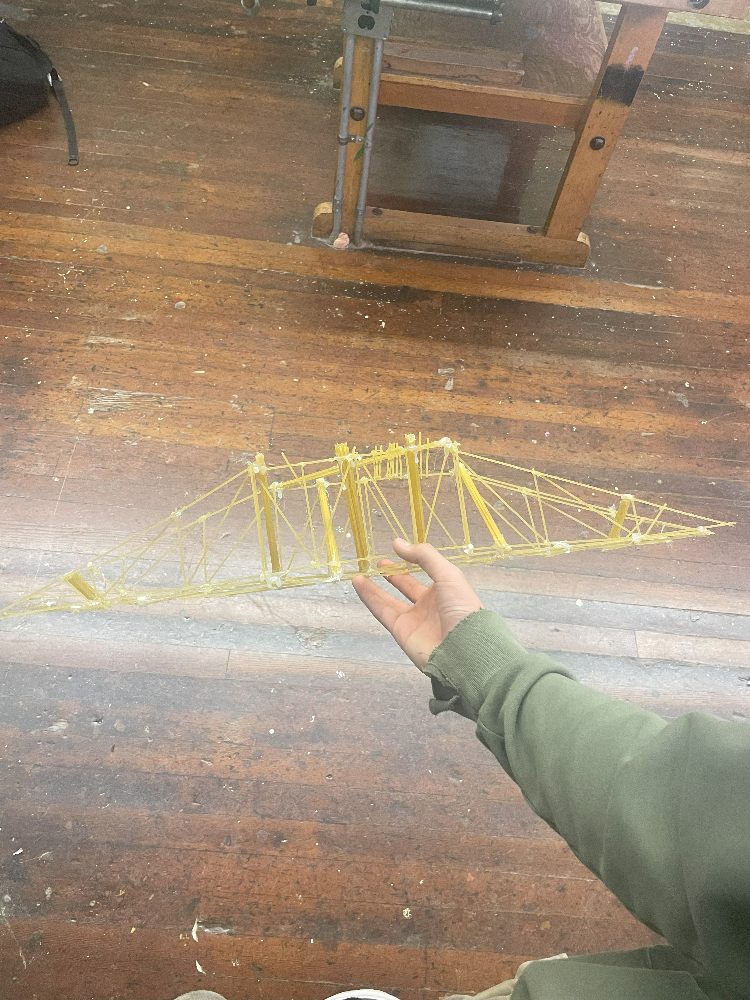
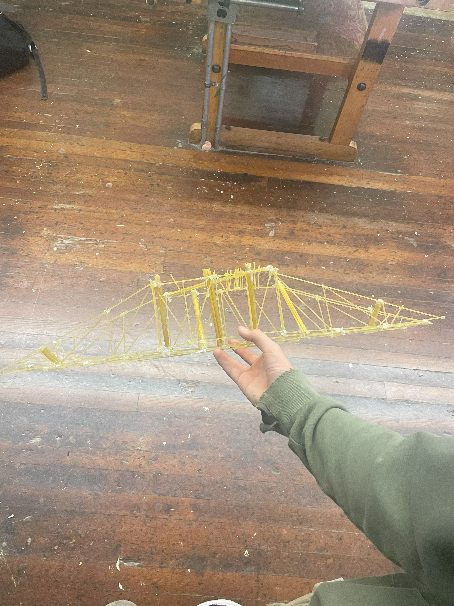

when we were making our first desing we wanted to see if just doing one line of spaghetti would work and still suport the mass we wanted it to. unfortunately this first test did not go how we wanted it to but we did learn a lot of info on the bright side such as making our bridge perfectly semetrical as much as possible
 
Background Color

Background Color